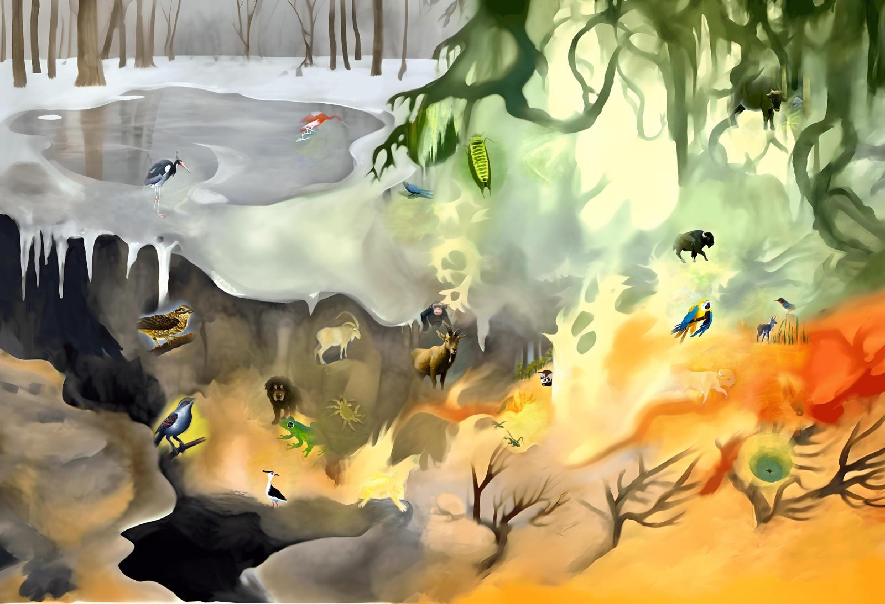
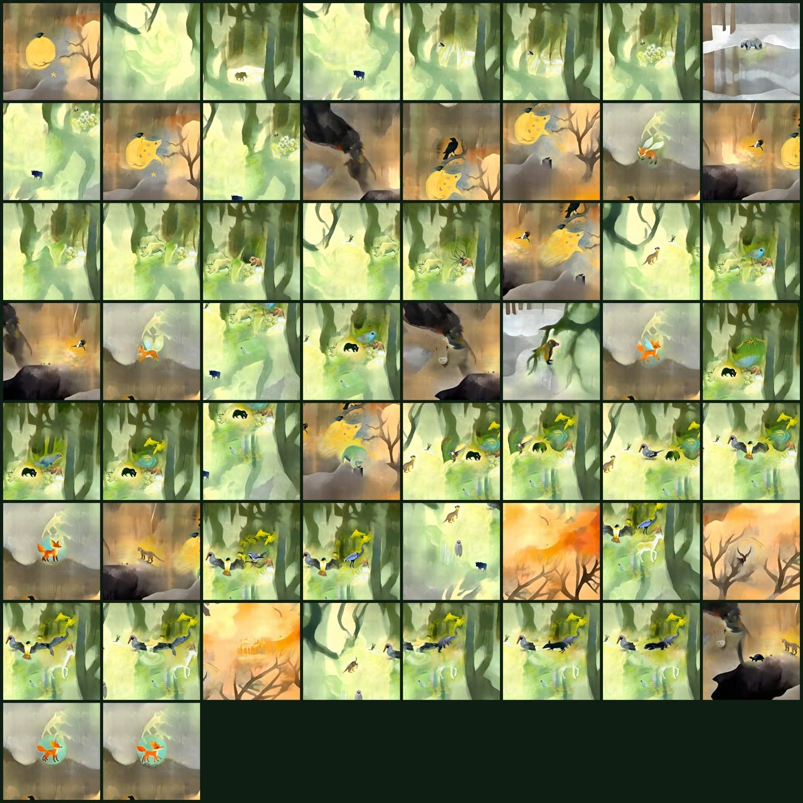
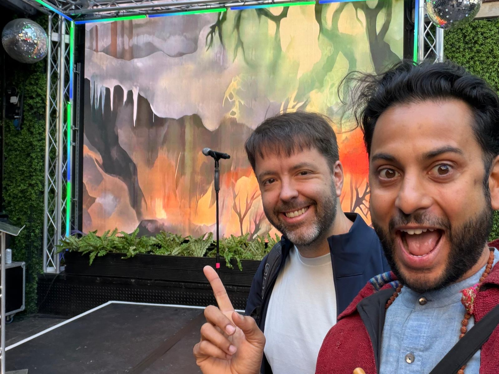
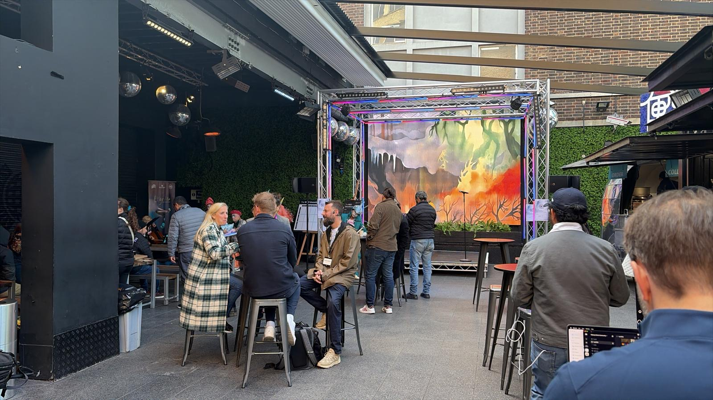

01
The live experience
An intimate 8–10 minute interaction between participant and system. Prompts about hope, fear, responsibility, agency. Each session ends with a personal symbolic story.
Participants enter a guided 8–10 minute exchange with an AI-mediated system. They share their fears, hopes, and visions of the future. The system answers with a fable — a symbolic story that finds their place inside a larger human field. Each fable becomes a trace inside an evolving collective mural. Over time, the work reveals how a temporary community imagines the future together.
An intimate 8–10 minute interaction between participant and system. Prompts about hope, fear, responsibility, agency. Each session ends with a personal symbolic story.
A central visual artwork that grows in real time. Every fable leaves a trace. Together they form a watercolor ecology of perspectives, contradictions, and desires.
A poetic-analytical reading produced after the installation: the emotional climate, the recurring tensions, the voices that emerged. An archive of what the field said.
The mural is the heart of the work — a slow, painterly landscape where every participant leaves a trace. Cold and warm climates, predators and small creatures, ruins and gardens. Read together, the field becomes a portrait of how a community holds the future inside itself.

The mural · London iteration
The mural is not a final image. It is a system. Each new participant changes the weather of the field — and reveals that imagining the future is something we are already doing, together.
One person, or a small group, steps into the installation. The system invites them into a short, guided dialogue.
Prompts unfold across 8–10 minutes: what you fear, what you hope for, what you want to protect, what you are ready to imagine.
The system answers with a symbolic story that locates you inside the collective field. The fable becomes a trace inside the evolving mural.
The first public iteration ran as a continuous installation embedded inside a shared social environment. Participants entered alone or in small groups across the event. Their responses accumulated into a single mural and a Weather Report — a poetic-analytical reading of the field's emotional and symbolic climate.


While the core system was tested in London, the Venice version develops the project as a distinct artistic work: a new thematic field — collective intelligence and the future we imagine together — with an expanded visual and textual layer, and a more fully realized installation format.
The structure remains stable. Each iteration becomes specific in meaning, and adapts to the social and cultural context where it is placed.